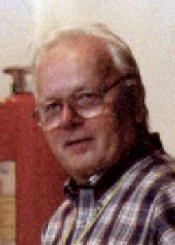

Kristen Nygaard | |
|---|---|
 Kristen Nygaard at the Brazilian Symposium on Programming Languages (SBLP '97) | |
| Born | 27 August 1926 Oslo, Norway |
| Died | 10 August 2002 (aged 75) Oslo,[1] Norway |
| Citizenship | Norway |
| Education | University of Oslo (BS, MS) |
| Known for | Object-oriented programming Simula |
| Awards | Turing Award (2001) IEEE John von Neumann Medal (2002) Royal Norwegian Order of St. Olav Norbert Wiener Award for Social and Professional Responsibility |
| Scientific career | |
| Fields | Computer science |
| Institutions | Norwegian Defense Research Establishment Norwegian Operational Research Society Norwegian Computing Center Aarhus University University of Oslo Simula Research Laboratory |
| Thesis | Theoretical Aspects of Monte Carlo methods (1956) |
Kristen Nygaard (27 August 1926 – 10 August 2002) was a Norwegian computer scientist, programming language pioneer, and politician. Internationally, Nygaard is acknowledged as the co-inventor of object-oriented programming and the programming language Simula with Ole-Johan Dahl in the 1960s. Nygaard and Dahl received the 2001 A. M. Turing Award for their contribution to computer science.
Nygaard was born in Oslo and received his master's degree in mathematics at the University of Oslo in 1956. His thesis on abstract probability theory was entitled "Theoretical Aspects of Monte Carlo methods".
Nygaard worked full-time at the Norwegian Defense Research Establishment from 1948 to 1960, in computing and programming (1948–1954) and operational research (1952–1960).
From 1957 to 1960, he was head of the first operations research groups in the Norwegian defense establishment. He was cofounder and first chairman of the Norwegian Operational Research Society (1959–1964). In 1960, he was hired by the Norwegian Computing Center (NCC), responsible for building up the NCC as a research institute in the 1960s, becoming its Director of Research in 1962.
With Ole-Johan Dahl, he developed the initial ideas for object-oriented programming (OOP) in the 1960s at the Norwegian Computing Center (Norsk Regnesentral (NR)) as part of the Simula I (1961–1965) and Simula 67 (1965–1968) simulation programming languages, which began as an extended variant and superset of ALGOL 60.[2] The languages introduced the core concepts of object-oriented programming: objects, classes, inheritance, virtual quantities, and multi-threaded (quasi-parallel) program execution. In 2004, the Association Internationale pour les Technologies Objets (AITO) established an annual prize in the name of Ole-Johan Dahl and Kristen Nygaard to honor their pioneering work on object-orientation. This Dahl–Nygaard Prize is awarded annually to two individuals that have made significant technical contributions to the field of object-orientation. The work should be in the spirit of the pioneer conceptual and/or implementation work of Dahl and Nygaard which shaped the present view of object-oriented programming. The prize is presented each year at the ECOOP conference. The prize consists of two awards given to a senior and a junior professional.
He conducted research for Norwegian trade unions on planning, control, and data processing, all evaluated in light of the objectives of organised labour (1971–1973), working together with Olav Terje Bergo. His other research and development work included the social impact of computer technology, and the general system description language DELTA (1973–1975), working with Erik Holbaek-Hanssen and Petter Haandlykken.
Nygaard was a professor at Aarhus University, Denmark (1975–1976) and then became professor emeritus at the University of Oslo (part-time from 1977, full-time 1984–1996). His work in Aarhus and Oslo included research and education in system development and the social impact of computer technology, and became the foundation of the Scandinavian School in System Development, which is closely linked to the field of participatory design.
Starting in 1976, he was engaged in developing and (since 1986) implementing the general object-oriented programming language BETA, together with Bent Bruun Kristensen, Ole Lehrmann Madsen, and Birger Møller-Pedersen. The language is now available on a wide range of computers.
In the first half of the 1980s, Nygaard was chairman of the steering committee of the Scandinavian research program System Development and Profession Oriented Languages (SYDPOL), coordinating research and supporting working groups in system development, language research, and artificial intelligence. Also in the 1980s, he was chairman of the steering committee for the Cost-13 (European Common Market Commission)-financed research project on the extensions of profession-oriented languages necessary when artificial intelligence and information technology are becoming part of professional work.
Nygaard's research from 1995 to 1999 was related to distributed systems. He was the leader of General Object-Oriented Distributed Systems (GOODS), a three-year Norwegian Research Council-supported project starting in 1997, aiming at enriching object-oriented languages and system development methods by new basic concepts that make it possible to describe the relation between layered and/or distributed programs and the computer hardware and people carrying out these computer programs. The GOODS team also included Haakon Bryhni, Dag Sjøberg, and Ole Smørdal.
Nygaard's final research interests were studies of the introductory teaching of programming, and creating a process-oriented conceptual platform for informatics. These subjects are to be developed in a new research project named Comprehensive Object-Oriented Learning (COOL), together with several international test sites. He was giving lectures and courses on these subjects in Norway and elsewhere. In November 1999, he became chair of an advisory committee on Broadband Communication for the Norwegian Department for Municipal and Regional Affairs. He held a part-time position at Simula Research Laboratory from 2001, when the research institute was opened.
In June 1990, he received an honorary doctorate from Lund University, Sweden. In June 1991, he became the first individual to be given an honorary doctorate by Aalborg University, Denmark. He became a member of the Norwegian Academy of Sciences.
In October 1990, Computer Professionals for Social Responsibility awarded him its Norbert Wiener Award for Social and Professional Responsibility.
In 1999, he and Dahl became the first people to receive the then new Rosing Prize, awarded by the Norwegian Data Association for exceptional professional achievements.
In June 2000, he was awarded an Honorary Fellowship for "his originating of object technology concepts" by the Object Management Group, a technical standards group for object-orientation, which maintains several International Organization for Standardization (ISO) standards.
In November 2001, the Institute of Electrical and Electronics Engineers (IEEE) awarded Nygaard and Dahl the IEEE John von Neumann Medal "For the introduction of the concepts underlying object-oriented programming through the design and implementation of Simula 67".[3]
In February 2002, he was given, once more with Ole-Johan Dahl, the 2001 A. M. Turing Award by the Association for Computing Machinery (ACM), with the citation: "For ideas fundamental to the emergence of object-oriented programming, through their design of the programming languages Simula I and Simula 67."
In August 2000, he was made Commander of the Royal Norwegian Order of St. Olav by then King Harald V of Norway.
In 1984 and 1985, Nygaard was chairman of the Informatics Committee of the University of Oslo, and active in the design of the university's plan for developing research, education and computing and communication facilities at all faculties of the university.
He was the first chairman of the Environment Protection Committee of the Norwegian Association for the Protection of Nature.
He was for 10 years (in the 1970s) Norwegian representative in the Organisation for Economic Co-operation and Development (OECD) activities on information technology. He has been a member of the Research Committee of the Norwegian Federation of Trade Unions, and cooperated with unions in many countries.
For several years, he was engaged in running an experimental social institution trying new ways to create humane living conditions for socially outcast alcoholics.
Nygaard was active in Norwegian politics. In the mid and late 1960s, he was a member of the National Executive Committee of the Norwegian Liberal Party, and chair of that party's Strategy Committee.[4] He was a minor ballot candidate in the 1949 parliamentary election.[5] During the intense political fight before the 1972 referendum on whether Norway should become a member of the European Common Market (later the European Union), he worked as coordinator for the many youth organisations that worked against membership.
From 1971 to 2001, Nygaard was a member of the Labour Party, and a member of their committees on research policies.
In November 1988, he became chair of the Information Committee on Norway and the EEC, in August 1990 reorganized as Nei til EF an organization disseminating information about Norway's relation to the Common Market, and coordinating the efforts to keep Norway outside. (No to European Union membership for Norway, literally "No to the EU"). In 1993, when the EEC ratified the Maastricht Treaty and became the European Union the organization changed its name to reflect this. Nei til EF became the largest political organization in Norway (145,000 members in 1994, from a population of 4 million). Nygaard worked with Anne Enger Lahnstein, leader of the anti-EU Centre Party, in this campaign. In the referendum on 28 November 1994, "Nei til EU" succeeded: 52.2% of the electorate voted "No", and the voter participation was the highest ever in Norway's history: 88.8%. The strategy of the campaign, insisted by Nygaard, was that it had to be for something as well as against, i.e., the Scandinavian welfare state Nygaard considered threatened by the Maastricht Agreement.
He resigned as chair in 1995, and was later the chair of the organization's strategy committee and a member of its council.
In 1996 and 1997, Nygaard was the coordinator of the efforts to establish The European Anti-Maastricht Movement (TEAM), a cooperative network between national organizations opposing the Economic and Monetary Union of the European Union (EMU) and the Maastricht Treaty in European countries within and outside the EU. The European Alliance of EU-critical Movements (TEAM) was successfully started 3 March 1997.
Kristen Nygaard married Johanna Nygaard in 1951. She worked at the Norwegian Agency for Aid to Developing Countries. She specialized for a number of years in recruiting and giving administrative support to specialists working in East Africa. Johanna and Kristen Nygaard had three children and seven grandchildren.
Nygaard died of a heart attack in 2002.
{kind=link}